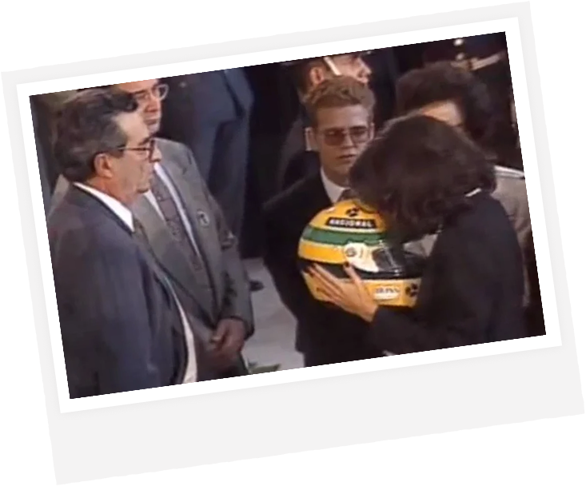

그리고 그것이 세나의 마지막 모습이었다.
세나는 응급 처치를 받고 곧바로 응급헬기를 타고
볼로냐에 위치한 마조레 병원으로 이송됐지만 오후 6시 40분, 끝내 사망 판정을 받아 세상을 떠났다.
볼로냐에 위치한 마조레 병원으로 이송됐지만 오후 6시 40분, 끝내 사망 판정을 받아 세상을 떠났다.

장례식에서 세나의 헬멧에 입을 맞추는 여동생의 모습은
아이언맨3에서 페퍼가 아이언맨 헬멧에 얼굴을 맞추는 장면에
영감을 줬다고 밝혀졌다.
사인으로 추정되는 세 가지 원인
세나의 레이스 카가 왜 갑자기 그 코너에서 이상한 움직임을 보이며 충돌했는지는 아직도 미스터리로 남아있다.
당시 세나의 소속팀이었던 윌리엄스는 FIA의 조사를 받았고, 여러 관계자가 처벌받거나
F1을 떠났지만 정확히 무엇 때문에 세나가 거기서 그립을 잃었는지는 알 수가 없었다.
당시 세나의 소속팀이었던 윌리엄스는 FIA의 조사를 받았고, 여러 관계자가 처벌받거나
F1을 떠났지만 정확히 무엇 때문에 세나가 거기서 그립을 잃었는지는 알 수가 없었다.
아일톤 세나는 그의 짧은 활동 기간 1984년 ~ 1994년 동안 레전드로 남을 업적을 세웠다.


세나의 사망 이후 FIA는 안전규정을 대폭 강화하였고,
이러한 수많은 변화들은 F1을 1994년 이후 약 20년 이상
드라이버 사망 사고 없이 진행된 스포츠로 만들었으며,
이는 아일톤 세나가 남긴 가장 위대한 유산 중 하나다.
이러한 수많은 변화들은 F1을 1994년 이후 약 20년 이상
드라이버 사망 사고 없이 진행된 스포츠로 만들었으며,
이는 아일톤 세나가 남긴 가장 위대한 유산 중 하나다.

Ayrton Senna
1960. 03. 21. — 1994. 05. 01.
브라질의 영원한 영웅, 아일톤 세나를 기리며